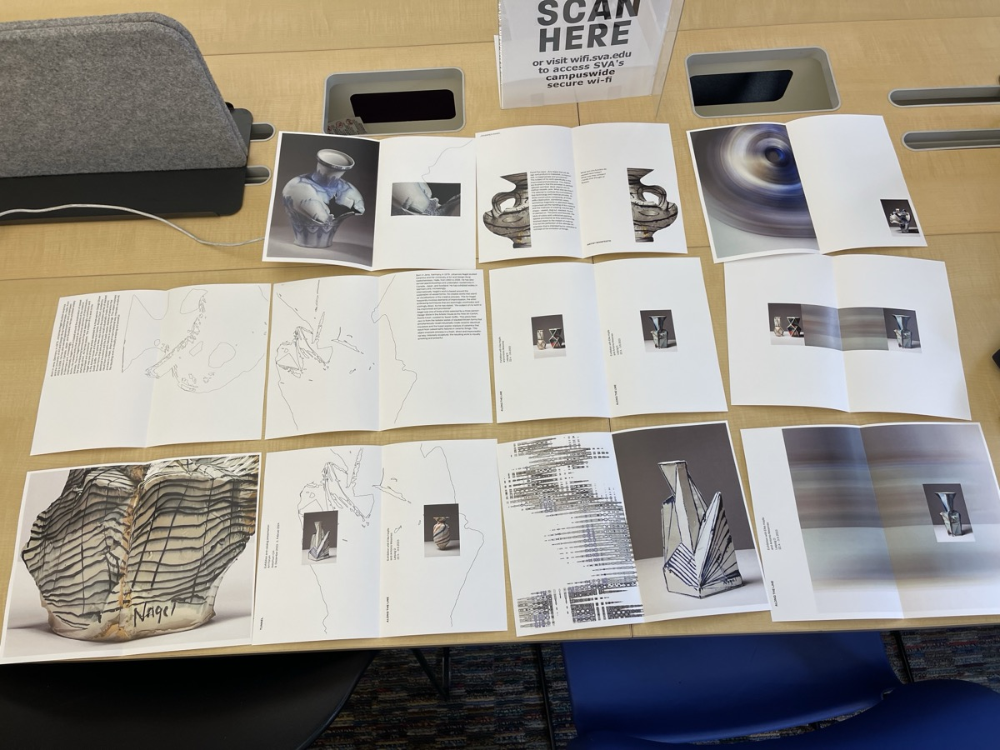
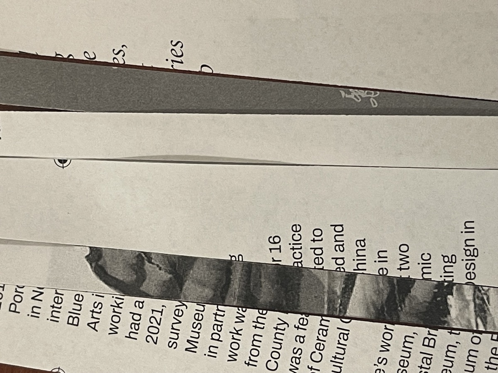
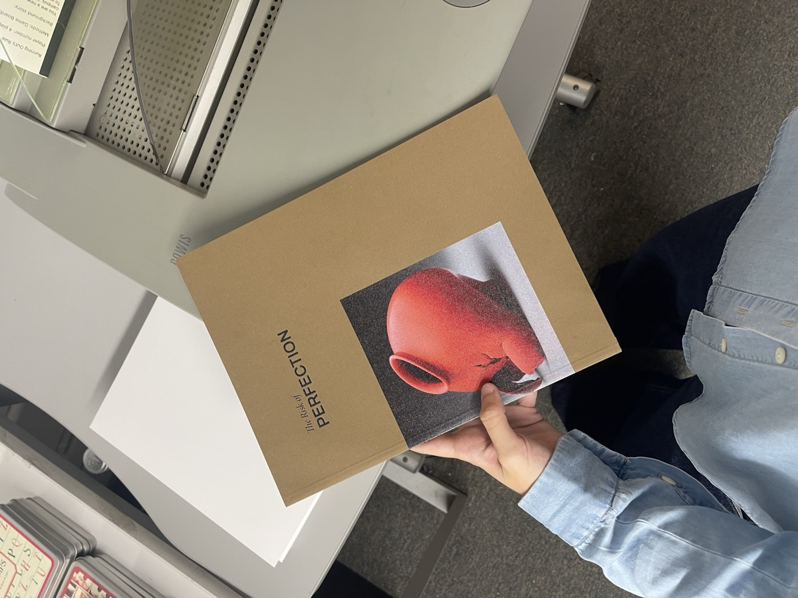
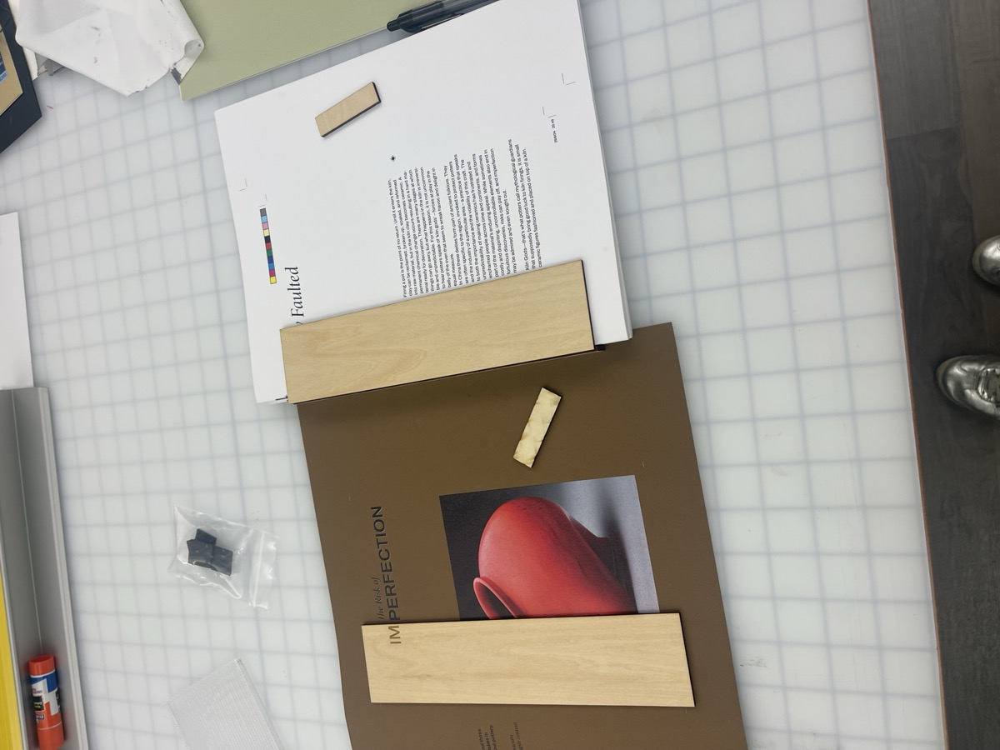

This book was developed during my Book Design class at SVA with Peter Ahlberg. The task was to create a book inspired by a collection from the V&A Museum.
One article stood out to me—it explored how ceramics, as a fragile art form, can be completely transformed or destroyed by even the smallest error. That fragility, that imperfection, is what makes each piece distinct. The book centers on these unintentional flaws that occur during the firing process and highlights two artists whose work embraces and celebrates these imperfections. It is sewn together and encased in a wooden box, reflecting its title and cover image in both concept and execution.



